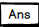

Presionando el botón
.png) y algún número podemos sacar el resultado de una raíz X
y algún número podemos sacar el resultado de una raíz XPresionando el botón
.png) nos sacará el logaritmo de un número o función
nos sacará el logaritmo de un número o función Presionando
.png) luego de un resultado se nos convertirá el resultado en Binario, Hexadecimal, Decimal
luego de un resultado se nos convertirá el resultado en Binario, Hexadecimal, Decimal Al presionar un número y
.png) , lo podremos elevar al cuadrado.
, lo podremos elevar al cuadrado.Presionando un número, el botón
.png) y otro número más nos multiplicará el primer número por el segundo
y otro número más nos multiplicará el primer número por el segundo Presionando
.png) nos dividirá un número de otro
nos dividirá un número de otro Presionando
.png) se sumará un valor a otro
se sumará un valor a otroPresionando
.png) nos restara un valor a otro
nos restara un valor a otro Presionando
.png) nos dará el resultado final de nuestro cálculo
nos dará el resultado final de nuestro cálculo nos escribira el resultado anterior
.png) presionándolo se borrara un carácter
presionándolo se borrara un carácter .png) presionándolo se borrara todo el cálculo
presionándolo se borrara todo el cálculo Todas estas operaciones las podemos utilizar en conjunto